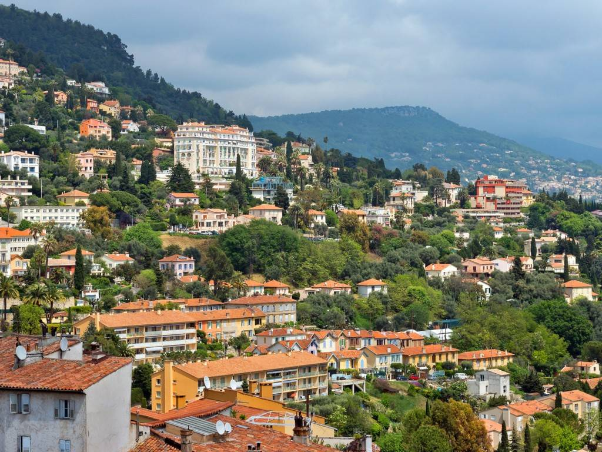
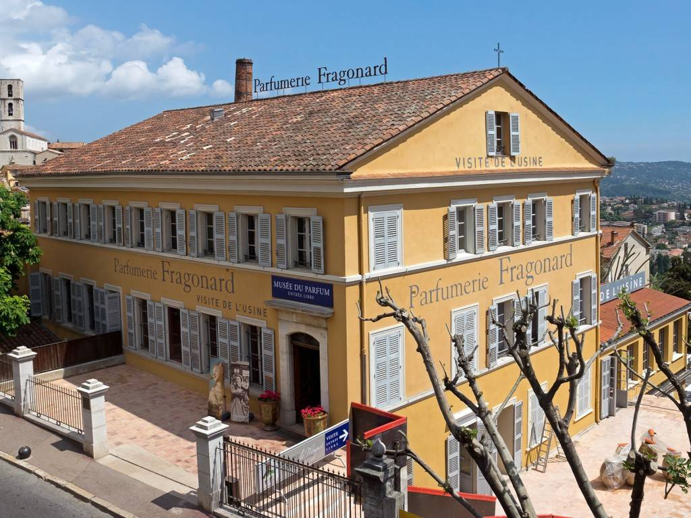
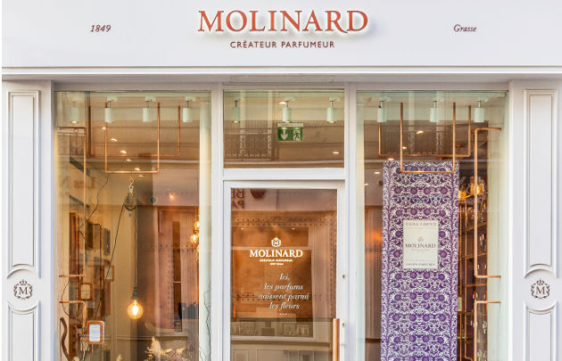
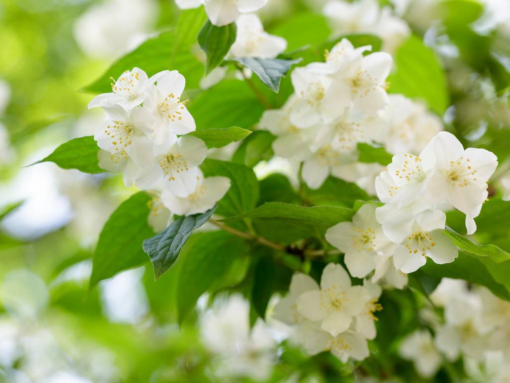

La capital mundial del perfume
En Grasse, una pequeña ciudad provenzal, muy cerca de Cannes, se concentra la mayor parte de la
producción mundial de perfumes.
Desde el siglo XVI, Grasse empezó a especializarse en la fabricación de guantes perfumados, una
costumbre popularizada por Catalina de Médici, siendo hoy en día conocida como la tierra de los
perfumes.
Es imposible hablar de Francia y no mencionar los perfumes, de hecho si viajas a este país será imposible
que salgas de él si por lo menos comprarte alguno. El protagonismo en este sector comienza en el siglo
XVII, quitándole el trono a Italia en este segmento.
El cultivo de flores es también una parte importante de esta comuna, ya que se necesitan muchos kilos de
flores para lograr un poco de esencia. Por ejemplo, 200 kilos de lavanda, flor típica de la zona, hacen
uno de extracto. También se utilizan esencias de origen animal o sintético. De todas partes del mundo
llegan a Grasse las materias primas para la elaboración de los perfumes.
El Perfume Perfecto
No cabe duda de que los perfumes nos vuelven locas a todas y en especial a las españolas.
Lo primero es elegir tu propia esencia, sabiendo que un mismo perfume olerá diferente de acuerdo al
denominado “olor base” de la piel de cada persona. Por eso los expertos recomiendan no elegir jamás un
perfume según cómo huele en un tercero, porque hay que aplicarlo en el propio cuerpo para conocer cómo
se combinan los aromas del perfume con el PH de tu piel. Lo que en otros puede oler muy bien, en vos
puede ser totalmente diferente.
Perfumerias francesas
Galimard
Fundada en 1747 por Jean de Galimard, es la tercera casa de perfumes más antigua del mundo. Sí, ha leído
bien: ¡esta respetada casa tiene ya 268 años! Desde su fundación, ha mantenido las recetas originales
utilizadas por el rey Luis XV, que reinó hasta su muerte en 1774. Su combinación de jazmín, rosa,
lavanda, azahar y nardo da lugar a un aroma que enamora a todo el mundo.

Fragonard
Fue fundada en 1782 y lleva desde entonces elaborando perfumes únicos a partir de flores cultivadas en
la zona. Los favoritos entre sus seguidores incluyen Fragonard, un aroma de jazmín y ámbar, y Belle
Chérie, de mandarina, vainilla y sándalo.

Molinard
La casa Molinard ha pertenecido a la misma familia desde el primer día. Desde el comienzo, esta casa ha
sido famosa por sus aguas florales y colonias. Incluso llegó a recibir una visita de la monarquía
británica en 1891, en la que la reina Victoria compró algunas de sus ya afamadas fragancias.

Le Domaine de Manon
Es una casa de perfumes familiar que cultiva sus propias flores en Grasse. La familia planta rosas
centifolia y jazmines grandiflora, dos tipos de flor populares en el ámbito de la perfumería que se
recogen durante el punto álgido de la floración y se destinan a las fragancias Dior, una de las marcas
de perfumes más afamadas del mundo.
